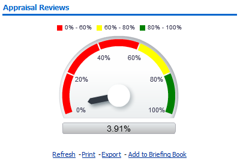
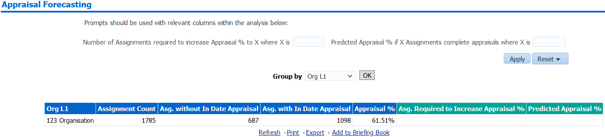
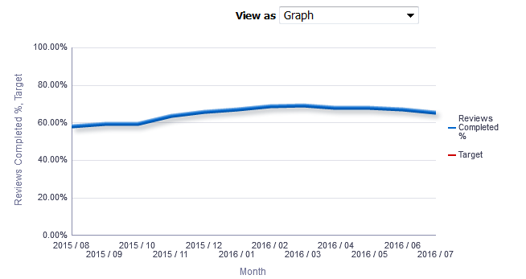
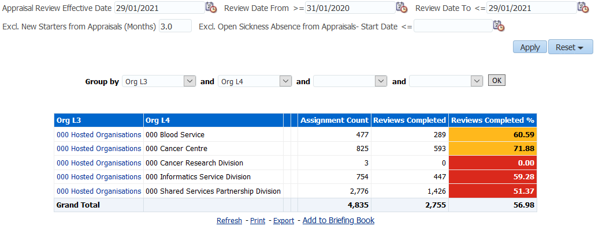
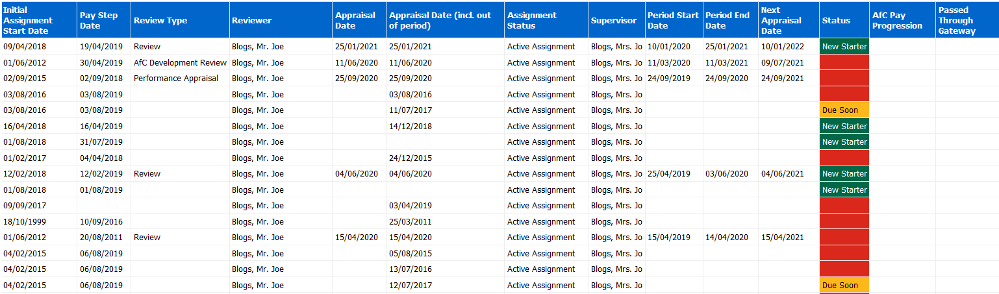
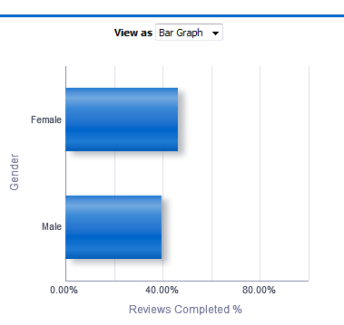
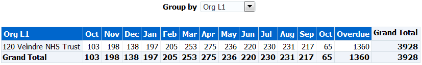
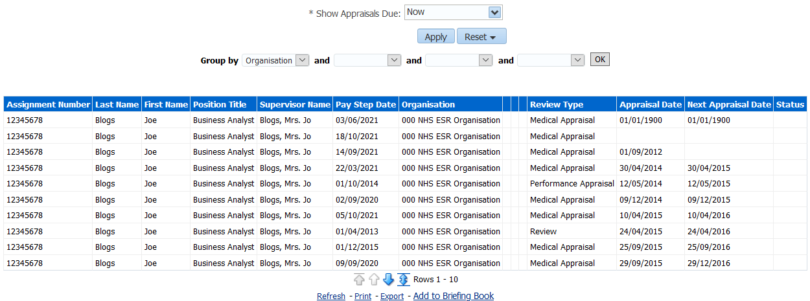

Appraisal Reviews Dashboard
Description
This dashboard is designed to provide the user with intelligence around Appraisal Reviews. Appraisal information is included within the Staff Requirements Dashboard however, it is not available to Learning Administrators. This dashboard allows Learning Administrators to access Appraisal information.
Allocation
This dashboard is available to the following URPs:
XXX BI Administration
XXX Learning Administration
XXX Payroll Administration
XXX Payroll Audit
XXX Payroll Super Administration
Summary Tab
Prompts
Organisation(s)
Staff Group(s) (Multi-select)
Person Type(s) (Multi-select, default: Employee, Employee and Applicant)
Employee Person Type(s) (Multi select)
Assignment Status
Occupation Code
Assignment Category(s) (Multi-select: default: exclude Locum Bank and Honorary)
Primary Assignments Only
Review Type
Organisation Level 1-13
Amber From (60)
Green From (90)
Location
Appraisal Review Effective Date
Review Date From
Review Date To
Excl. New Starters from Appraisals (Months) (3)
Excl. Open Sickness Absence from Appraisals- Start Date <=
Appraisal Reviews
Description
This analysis shows the percentage of employees that have a completed appraisal within the parameters available.
Data Items
| Title | Description |
|---|---|
| Appraisal % | (Appraisals Completed / Headcount) * 100 |
Column Selectors
None
View Selector
None
Example Screenshot

Actions
Click->Detail Tab
Appraisal Review Summary
Description
This analysis shows the percentage of employees that have completed an appraisal, grouped by Org Levels 1-13 or Staff Group.
Data Items
| Title | Description |
|---|---|
| Appraisal % | (Appraisals Completed / Headcount) * 100 |
| Assignment Count | |
| Reviews Completed | Distinct count of completed appraisals with the Date Prompt. (e.g. if a person has 2 completed appraisals in the period, this should be counted only once). |
| Org level 1-13 |
Column Selectors
Org Level 1-13
Staff Group
View Selector
Column Graph (default)
Column Graph (formatted)
Bar Graph
Radar Graph
Gauge
Table
Example Screenshot

Actions
Click->Detail Tab
Appraisal Forecasting
Description
This analysis enables users to report the number of assignments required to complete appraisals in order to increase Appraisal % to a desired figure, or report predicted Appraisal % if a defined number of assignments complete appraisals.
Data Items
| Title | Description |
|---|---|
| Organisation L1-13 | |
| Orgasniation | |
| Staff Group | |
| Assignment Count | |
| Assignments without In Date Appraisal | |
| Assignments with In Date Appraisal | |
| Appraisal % | (Appraisals Completed / Headcount) * 100 |
| Assignments Required to Increase Appraisal % | Relevant prompt should be used to populate this column which shows the number of Assignments required to increase Appraisal percentage to a defined figure. |
| Predicted Appraisal % | Relevant prompt should be used to populate this column which shows the predicted Appraisal percentage expected when a defined number of assignments complete Appraisals. |
Column Selectors
Org Level 1-13
Organisation
Staff Group
Example Screenshot

Appraisal Timeline
Description
This analysis shows the percentage of employees that have a completed appraisal over a period of time (defined using the available prompts).
Please Note: This analysis includes an optional Target measure which allows users to view a Reviews Completed % against a set target.
Data Items
| Title | Description |
|---|---|
| Appraisal % | (Appraisals Completed / Headcount) * 100 |
| Assignment Count | |
| Reviews Completed | |
| Month | |
| Staff Group (Table View Only) | |
| Organisation Name (Table View Only) | |
| Organisation Level 1-13 (Table View Only) |
Column Selectors
Staff Group (Table View Only)
Organisation Name (Table View Only)
Organisation Level 1-13 (Table View Only)
View Selector
Line Graph (default)
Line Graph (without Target)
Table
Prompts
Appraisal Reviews - Number of Months to use (12)
Excl. New Starters from Appraisals (Months)
Calculation Method (Last Day of Month)
Month Between
Target
Example Screenshot

By Organisation Tab
Description
This tab is designed to provide the user with intelligence on Appraisals by Organisation.
Column Selectors
Group By (Org Level 1-13)
Occupation Code
View Selector
None
Data Items
| Org Level 1-13 | Reviews Completed |
|---|---|
| Reviews Completed % | Occupation Code |
| Assignment Count |
Conditional Formatting
Reviews Completed % - RAG Status as defined using prompts
Example Screenshot

Detail Tab
Description
This tab is designed to provide detailed data relating to Appraisals.
Prompts
Appraisal Review Effective Date
Define New Starters (Months)
Remove New Starters (Yes)
Review Date From >=
Review Date To <=
* Show Reviews (Default: Latest Review Only)
Excl. Open Sickness Absence from Appraisals- Start Date <=
Restrict to Employees Due a Pay Affecting Pay Step in the Period (Yes)
Pay Step Date Between
Actions
Navigate to ESR Self Service (available to self-service users only)
Column Selectors
Organisation
Organisation Level (Org Level 1-13)
Data Items
| Employee Number | Latest Start Date |
|---|---|
| Assignment Number | Pay Step Date |
| Last Name | Review Type |
| First Name | Appraisal Date |
| Title | Assignment Status |
| Organisation | Period Start Date |
| Organisation | Period End Date |
| Organisation | Next Appraisal Date |
| Role | Status |
| Position | AfC Pay Progression |
| Passed Through Gateway | Supervisor |
| Appraisal Date (Including out of period) | Staff Group |
| Reviewer | Initial Assignment Start Date |
| Payscale |
Example Screenshot

Monitoring Tab
The monitoring tab of the Appraisal Reviews Dashboards provides Appraisal intelligence grouped by the range of protected characteristics and assignment details.
Appraisal Reviews by Gender, Age Band, Religious Belief, Disability, Assignment Category, Sexual Orientation, Ethnic Origin and Full Time/Part Time
Description
These group of analyses show an appraisal review % by each of the following protected characteristics and assignment details: Gender, Age Band, Religious Belief, Disability, Assignment Category, Sexual Orientation, Ethnic Origin and Full Time/Part Time.
Data Items
| Appraisal % | Age Band |
|---|---|
| Gender | Disability |
| Religious Belief | Sexual Orientation |
| Assignment Category | Full Time/Part Time |
| Ethnic Origin |
Column Selectors
None
View Selector
Bar Graph (default)
Pie Graph
Table
Example Screenshot

Actions
Click->Detail Tab
Manage Appraisals Due
Summary
Description
This analysis is designed to show the number of assignements due for review in the next 12 months including overdue reviews.
Data Items
| Title | Description |
|---|---|
| Reviews Due | Distinct count of assignments due for review (e.g. if a person has an assignment with 2 reviews that are both due, this should be counted only once). |
| Month | |
| Staff Group | |
| Org Level 1-13 |
Example Screenshot

Detail
Description
This analysis is designed to provide the user with a list of staff whose next development review is due or already overdue.
Prompts
* Show Appraisals Due (Now, Within 1 Month, 3 Months & 6 Months)
Data Items
| Title | Description |
|---|---|
| Assignment Number | |
| Last Name | |
| First Name | |
| Position Title | |
| Supervisor Name | |
| Pay Step Date | |
| Organisation | |
| Org Level 1-13 | |
| Review Type | Type of review completed |
| Appraisal Date | Latest review date for the person within the Prompts selected. |
| Next Appraisal Date | Next review date as entered during review |
| Status |
Example Screenshot

Pay Progression Tab
Description
The Pay Progression Detail analysis is similar to the Appraisal Reviews detail analysis available within the NHS Appraisal Reviews dashboard but includes a number of new fields related to the new Agenda for Change pay progression changes.
Please note that the Start Date in Grade field used by the analysis is the one from the Assignment DFF however where that is not populated i.e. a date is not available, the analysis uses the Grade Effective Start Date from the Assignment Grade Step Placement form.
Please note also that the analysis uses only the current year’s pay rates to establish key information such as the Date Of Pay Affecting Pay Step. Users wishing to report next year’s rates are only able to do so after 1st April. The prompt below can be used to identify employees whose Date of Pay Affecting Pay Step will change based on the following years pay scales.
Prompts
Appraisal Review Effective Date
Define New Starters (Months)
Remove New Starters (Yes)
Review Date From >=
Review Date To <=
* Show Reviews (Default: Latest Review Only)
Excl. Open Sickness Absence from Appraisals- Start Date <=
Restrict to Employees Due a Pay Affecting Pay Step in the Period (Yes)
Pay Step Date Between
Actions
Navigate to ESR Self Service (available to self-service users only)
Column Selectors
Organisation
Organisation Level (Org Level 1-13)
Data Items
| Employee Number | Appraisal Date (Including out of Period) |
|---|---|
| Assignment Number | Assignment Status |
| Last Name | Supervisor |
| First Name | Period Start Date |
| Title | Period End Date |
| Organisation | Next Appraisal Date |
| Role | Status |
| Position Title | AfC Pay Progression |
| Pay Grade | Passed Through Gateway |
| Latest Start Date | Date of Pay Progression Re-instatement |
| Initial Assignment Start Date | Reason for Non Progression 1 |
| Start Date in Grade | Reason for Non Progression 2 |
| Pay Step Date | Reason for Non Progression 3 |
| Review Type | Reason for Non Progression 4 |
| Reviewer | Reason for Non Progression 5 |
| Appraisal Date | Date of Pay Affecting Pay Step |
| Next Grade Step Pay Affecting | Grade Step Ceiling Reached |
| Organisation | Organisation Level (Org Level 1-13) |
| Email Address | Supervisor Email Address |
Example Screenshot